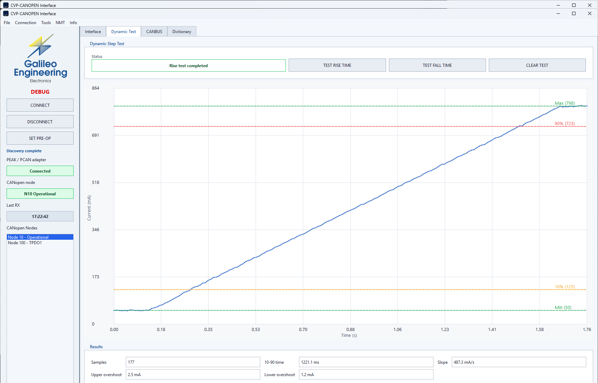
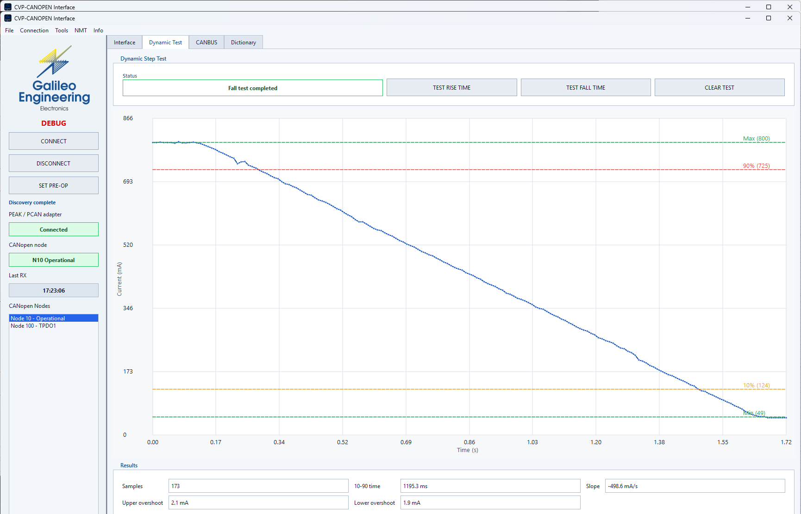

CVP5 Series Proportional Valve Controller
Industrial CANopen digital electronic driver for proportional hydraulic solenoids. Closed-loop current regulation, programmable dither, 10-point linearization, and integrated fault diagnostics.
1. Executive Summary
The Galileo Engineering CVP5 series is a family of compact, valve-mounted proportional drivers. The unit regulates solenoid current via an internal high-speed closed-loop microcontroller, shielding hydraulic flow from coil temperature drift and supply voltage variations.
Communication with the supervising controller (PLC, vehicle computer, or PC) takes place over a standard CANopen bus, allowing real-time setpoint input, instantaneous current telemetry, voltage monitoring, and persistent parameter configuration.
2. System Architecture
The system deployment includes the CVP5 valve driver, an industrial CAN bus segment (ISO 11898), and either an automated PLC master or the PyCanGui PC commissioning software connected through a PEAK PCAN-USB adapter:

3. Models & Form Factors
| Model Code | Connector Type | Valve Mechanical Interface | Channels | Application |
|---|---|---|---|---|
| CVP5-A-H | DIN EN 175301-803 (Hirschmann ISO 4400) | Direct coil plug-in | 1 Output (EV1) | Standard industrial hydraulic valves |
| CVP5-A-M12 | M12 Circular 5-pole (A-coded) | Direct coil plug-in | 1 Output (EV1) | Mobile hydraulics and harsh environments |
| CVP5-C-M12 | M12 Circular 5-pole (A-coded) | Compact integrated coil body | 1 Output (EV1) | High-density manifolds and compact assemblies |
| CVP5-H (Dual) | Deutsch DT04 / Double cable gland | Dual solenoid interface | 2 Outputs (EV1 + EV2) | Bidirectional directional proportional valves |
4. Electrical Specifications
| Parameter | Min | Typical | Max | Unit | Notes |
|---|---|---|---|---|---|
| Operating Supply Voltage (Vsupply) | 9.0 | 12.0 / 24.0 | 32.0 | Vdc | Reverse polarity protected |
| Maximum Output Current (Imax) | 0.1 | - | 2.6 | A | Software configurable via SDO 0x2102:1 |
| Current Measurement Resolution | - | 1.0 | - | mA | Precision shunt sampling |
| PWM Carrier Frequency | 1.0 | 4.0 | 10.0 | kHz | High efficiency low-loss switching |
| Dither Frequency Range | 50 | 124 | 300 | Hz | Configurable via SDO 0x2105:5 |
| Dither Amplitude | 0 | 10 | 25 | % | Relative to maximum setpoint current |
| Recommended Coil Resistance | 4.5 | 10 - 22 | 35 | Ohm | Suitable for 12V and 24V solenoids |
| Standby Current Consumption | - | 35 | 50 | mA | At 24 Vdc supply with zero current command |
| Operating Temperature Range | -20 | +25 | +70 | deg C | Industrial rating |
5. Connectors & Pinout
The standard connection format uses an industry-standard M12 5-pole circular connector (A-coded, male on unit).
| Pin Number | Signal Name | Signal Description | Cable Color Code (IEC 60947-5-2) |
|---|---|---|---|
| Pin 1 | CAN_SHLD / NC | Cable shield reference or not connected | Brown |
| Pin 2 | V+ (Supply) | DC Power Input (+12 Vdc to +30 Vdc) | White |
| Pin 3 | GND (Power & Bus Return) | Common 0 Vdc reference | Blue |
| Pin 4 | CAN_H | CANopen High bus signal line (ISO 11898) | Black |
| Pin 5 | CAN_L | CANopen Low bus signal line (ISO 11898) | Grey |
7. CANopen Communication Interface
The unit operates as a standard CANopen slave conforming to CiA DS301 and DS401 profile definitions. Default communication parameters:
- Default Node-ID:
10(0x0A hexadecimal). - Default Baud Rate:
250 kbit/s(supported: 10, 20, 50, 125, 250, 500, 800, 1000 kbit/s). - Identifier Format: 11-bit standard CAN identifiers.
- Heartbeat Period: 1000 ms (COB-ID
0x700 + Node-ID=0x70A).
| Service | COB-ID Base | Default ID (Node 10) | Direction | Function |
|---|---|---|---|---|
| NMT Command | 0x000 |
0x000 |
Master to Slave | Node state control (Start, Stop, Pre-op, Reset) |
| SYNC | 0x080 |
0x080 |
Master to Slave | Synchronization pulse |
| EMCY | 0x080 + Node-ID |
0x08A |
Slave to Master | Asynchronous emergency error message |
| TPDO1 | 0x180 + Node-ID |
0x18A |
Slave to Master | Cyclic analog measurements (Currents, Voltages) |
| RPDO1 | 0x200 + Node-ID |
0x20A |
Master to Slave | Real-time current command reference |
| TPDO2 | 0x280 + Node-ID |
0x28A |
Slave to Master | Fault flags and status bytes |
| SDO Response | 0x580 + Node-ID |
0x58A |
Slave to Master | Expedited SDO read/write response |
| SDO Request | 0x600 + Node-ID |
0x60A |
Master to Slave | Expedited SDO read/write command |
| Heartbeat | 0x700 + Node-ID |
0x70A |
Slave to Master | Node state monitor (Boot-up: 0x00, Operational: 0x05) |
| LSS (Layer Setting) | 0x7E4 / 0x7E5 |
0x7E4 / 0x7E5 |
Bidirectional | Dynamic Node-ID and baud rate configuration |
8. Real-Time PDO Interface
RPDO1 - Current Reference Command (0x200 + Node-ID)
The master controller transmits RPDO1 cyclically or upon setpoint change to define target valve current:
| Byte Offset | Parameter | Format | Description |
|---|---|---|---|
| Byte 0 - 1 | CH1_Ref (EV1) | UINT16 (Little-Endian) | Setpoint reference for valve EV1 (scaled to Imax) |
| Byte 2 - 3 | CH2_Ref (EV2) | UINT16 (Little-Endian) | Setpoint reference for valve EV2 (dual valve units only) |
| Byte 4 - 7 | Reserved | - | Transmit 0x00 |
TPDO1 - Analog Telemetry Feedback (0x180 + Node-ID)
Transmitted cyclically by the CVP5 unit (default period: 100 ms):
| Byte Offset | Parameter | Format | Unit | Description |
|---|---|---|---|---|
| Byte 0 - 1 | Iread_EV1 | INT16 (Big-Endian) | mA | Actual measured output current on EV1 coil |
| Byte 2 - 3 | Iread_EV2 | INT16 (Big-Endian) | mA | Measured current on EV2 (reports 0 on single valve models) |
| Byte 4 - 5 | Vread_EXT | INT16 (Big-Endian) | mV | External analog input voltage (reports -123 if unused) |
| Byte 6 - 7 | Vread_SPP | INT16 (Big-Endian) | mV | Actual power supply rail voltage (Vsupply) |
TPDO2 - Error Flags & Diagnostics (0x280 + Node-ID)
| Byte | Name | Bit Breakdown |
|---|---|---|
| Byte 0 | ErrorEV1 | Bit 0: Broken Wire (no load) Bit 1: Overcurrent (I > Imax) Bit 2: Supply Voltage Out of Bounds Bit 3: Internal Thermal Alarm |
| Byte 1 | ErrorEV2 | Same bit allocation applied to channel EV2 |
| Byte 2 | ErrorDigital | Auxiliary digital I/O status flags |
9. SDO Object Dictionary
Access parameters via standard expedited SDO transfers (Request on 0x600 + Node-ID, Response on 0x580 + Node-ID):
| Index | Sub | Name | Type | Access | Default | Description |
|---|---|---|---|---|---|---|
| 0x1000 | 0 | Device Type | U32 | RO | 0x00000000 | CiA DS301 device definition |
| 0x1001 | 0 | Error Register | U8 | RO | 0x00 | Standard DS301 error register |
| 0x100A | 0 | Software Version | STR | RO | - | Internal firmware build tag |
| 0x1010 | 1 | Store Parameters | U32 | RW | - | Write 0x65766173 ('save') to store settings in non-volatile flash |
| 0x1011 | 1 | Restore Defaults | U32 | RW | - | Write 0x64616F6C ('load') to restore factory settings |
| 0x1017 | 0 | Producer Heartbeat | U16 | RW | 1000 | Heartbeat transmission interval in milliseconds |
| 0x1018 | 1 | Vendor ID | U32 | RO | 22 | Galileo Engineering manufacturer ID |
| 0x1018 | 2 | Product Code | U32 | RO | 1 | CVP-CAN valve controller |
| 0x2102 | 1 | EV1 Max Current | U16 | RW | 1000 | Full scale output current in mA (100 to 2600 mA) |
| 0x2102 | 2 | EV1 Offset Current | U16 | RW | 0 | Minimum initial current threshold in mA (0 to 500 mA) |
| 0x2102 | 3 | EV1 Ramp Up | U16 | RW | 1000 | Current ramp rate up in mA/s (10 to 10000 mA/s) |
| 0x2102 | 4 | EV1 Ramp Down | U16 | RW | 1000 | Current ramp rate down in mA/s (10 to 10000 mA/s) |
| 0x2102 | 5 | EV1 Dither Amplitude | U8 | RW | 10 | Percentage of dither superimposed on setpoint (0 to 25%) |
| 0x2102 | 16 | EV1 Mapping Flag | U8 | RW | 0 | 0: Linear mode, 1: 10-point correction curve active |
| 0x2105 | 5 | Dither Frequency | U16 | RW | 124 | Dither signal frequency in Hz (50 to 300 Hz) |
| 0x2106 | 0 | Node-ID | U8 | RW | 10 | Device CANopen address (1 to 127). Save & reset required. |
| 0x2107 | 2 | Configured Valves | U8 | RO | 1 | Active valves count (1: single valve, 2: dual valve) |
11. Telegram Examples
Representative raw CAN frames for integration verification on CAN bus analyzer tools (e.g. PCAN-View):
Start Node into Operational State (NMT)
CAN-ID: 0x000 DLC: 2 DATA: 01 0AWhere 01 = Start command, 0A = Target Node-ID 10.
Command EV1 to 500 mA (RPDO1)
CAN-ID: 0x20A DLC: 4 DATA: F4 01 00 000x01F4 represents 500 mA in unsigned 16-bit little-endian format.
Store All Parameters into Non-Volatile Flash (SDO)
CAN-ID: 0x60A DLC: 8 DATA: 23 10 10 01 73 61 76 65
Response:
CAN-ID: 0x58A DLC: 8 DATA: 60 10 10 01 00 00 00 0012. PyCanGui Commissioning & Diagnostic Software
PyCanGui is the official Galileo Engineering desktop application designed for testing, calibration, and tuning of CVP5 series valve drivers over a PEAK PCAN-USB interface.
Key Software Features in Version 1.1.0
- Automatic Valve Topology Detection: The GUI queries device capabilities upon connection. If a single-valve unit (CVP5-A or CVP5-C) is detected, all EV2 controls and telemetry indicators are disabled and marked
N.A., preventing operator confusion. - Adaptive Real-Time Current Plot: Dynamic plot updates seamlessly without lag, scaling between EV1 and EV2 automatically.
- Hardware Hot-Unplug Protection: The background CAN receive thread continuously supervises the adapter connection state. If the USB cable is unplugged or the valve power is cut, the UI returns safely to disconnected status without hanging.
- Object Dictionary Explorer: Full-featured SDO explorer with category filtering (Communication, Manufacturer, Device Profile) and instant search.

Dynamic Step Response Testing (Rise & Fall Time)
PyCanGui includes automated dynamic test routines to evaluate the mechanical response of the spool and verify current acceleration/deceleration ramps:




10-Point Flow Linearization & Mapping
The Mapping tab allows operators to calibrate custom 10-point interpolation curves, compensating for spool overlap (deadband) and non-linear valve flow characteristics:

Bus Packet Monitor
Integrated frame tracer for low-level bus diagnostics, showing decoded CANopen services, COB-IDs, and payloads:

16. Downloads & Integration Packages
Official release artifacts, commissioning utilities, and machine controller integration files:
PyCanGui Setup v1.1.0
Complete Windows installer including embedded Python runtime, Qt libraries, application shortcuts, and certified PEAK PCAN-Basic drivers.
Download Windows Installer (179 MB)CANopen Master Files (EDS)
Electronic Data Sheet (CiA 306) and XML device descriptions for importing CVP5 into Codesys, TwinCAT, CANoe, or PLC configurators.
Download EDS FileIntegration Manual (HTML)
Standalone distributor-facing CANopen integration manual with complete message layouts and programming procedures.
Open Standalone Manual17. Technical PDF Datasheets
| Document | Connector Type | Format | Action |
|---|---|---|---|
| CVP5-A-H Datasheet | DIN EN 175301-803 (Hirschmann ISO 4400) | PDF (Revision 1) | Download PDF |
| CVP5-A-M12 Datasheet | M12 Circular 5-pole (A-coded) | PDF (Revision 1) | Download PDF |
| CVP5-M12 Datasheet | M12 Standard Housing | Download PDF | |
| CVP5-H (Dual) Datasheet | Deutsch DT04 Dual Valve Driver | Download PDF |
18. Release History & Changelog
PyCanGui Version 1.1.0 (November 2026)
- Single Valve Topology Optimization: Automatic detection of single-valve hardware. EV2 readings, error panels, and setpoint sliders are disabled and marked
N.A.when connected to CVP5C or single-channel units. - Adaptive Trend Chart: Plot view adjusts dynamically to display only active channels, optimizing screen real estate.
- Quick CANopen Reference Box: Embedded reference box in Dictionary tab with instantaneous reminders of COB-IDs and payload byte layouts.
- SDO Category Filter: Quick filtering by object groups (All, Communication, Manufacturer, Device Profile).
- Target CAN-ID Range: Expanded address configuration range to 0 - 127.
- Factory Reset Improvements: Restoring defaults safely retains the currently assigned Node-ID while clearing custom calibration curves.
PyCanGui Version 1.0.0 (July 2026)
- RX Thread Disconnect Detection: Hot-unplug detection implemented directly in the high-speed CAN receive loop, avoiding UI freezes upon cable disconnect.
- UI Polling Elimination: Removed background adapter enumeration from the main Qt thread, eliminating UI jitter.
- Adaptive Dynamic Test Timeout: Step response test timeouts are calculated dynamically based on current delta and ramp settings.
- Certified Packaging: Inno Setup installer bundling certified PEAK PCAN-Basic drivers with elevated UAC installation flow.
CVP5 Firmware Updates
- Variable Dither Frequency: SDO parameter
0x2105:5allows runtime adjustment between 50 Hz and 300 Hz. - Thermal Current Compensation: Improved ADC current feedback filtering over temperature swings.
- Enhanced Electromagnetic Immunity: Hardened against electrical transients and ISO 7637 vehicular disturbances.